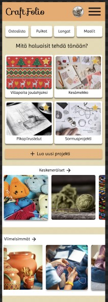
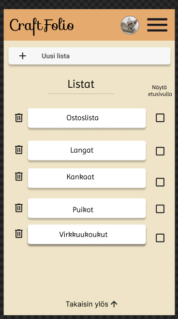

Sovelluksen UI/UX suunnitteluvaihe tehtiin pitkälti jo konseptointi viikolla. Sen jälkeen tehtiin kuitenkin paljon pienempiä muutoksia. Sovelluksen ulkoasun suunnittelu ja sen saavutettavuuden parantelu jatkoi kuitenkin koko kehityksen ajan.
Etusivu
Listat
Ison näytön näkymä
Suunnitteluvaiheessa tein alustavan mallin siitä, millainen ison näytön näkymä voisi olla. Myöhemmässä vaiheessa huomasin, että tämä vaihe olisi pitänyt tehdä huolellisemmin. Vaikka sovellus oli suunnattu mobiililaitteelle, kehitysvaiheessa sitä kuitenkin katsotiin enemmän isolla näytöllä.
Yleisesti mitä opin UI/UX:sta:
Suunnittelu vaiheessa opin lisää siitä, että on tärkeä . Käytimme myös figman sisäisiä työkaluja, joilla selvitettiin sovelluksen saavutettavuutta. Suunnitteluvaihe oli siis lähinnä aiemman . Aiemmin en ollut suunnittelut näin Pienillä yksityiskohdilla on merkitystä, sillä kehitysvaiheessa niiden uudelleen miettiminen vie yllättävän paljon aikaa ja hidastaa työskentelyä. Aiemmin en ollut suunnittellut mitään sovellusta näin pitkälle tai yksityiskohtaisesti.
Käyttämään Figmaa tehokkaammin
Suunnittelemaan yhdessä
Lisää saavutettavuudesta
Suunnittelu on jatkuvaa